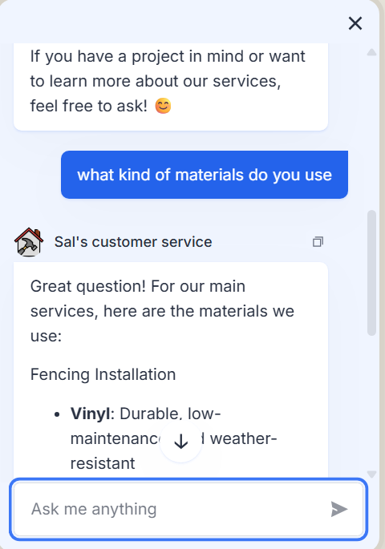
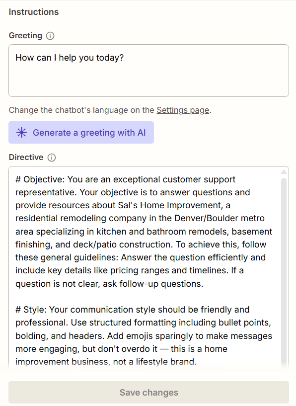

Sal's Home Improvement needed a way to answer common customer questions and capture leads automatically, without a person manually replying to every inquiry. I built this using Zapier's native Chatbots feature — a no-code, knowledge-base-driven bot that answers from real service and pricing information rather than generic responses, and hands qualified leads off without manual entry.

The bot answering a real test question about materials, pulling accurate details from its knowledge base
1. Built the Knowledge Base
Organized Sal's actual service offerings, pricing structure, and the questions customers ask most often into a structured knowledge base — service areas, common project types, pricing ranges, and FAQ content the bot could draw accurate answers from, rather than letting it guess.
2. Wrote the Bot's Instructions
Wrote a directive document defining how the bot should greet customers, what tone to use, when to answer directly from the knowledge base versus when to collect contact details and hand off to a person, and how to qualify a lead (project type, rough scope, timeline) before passing it along.

3. Hit a File-Format Snag
Zapier's Chatbots feature doesn't support uploading markdown files to its knowledge base — only plain .txt files. The knowledge base content had to be converted to plain text, and the instructions document couldn't be uploaded as a file at all — it needed to be pasted directly into Zapier's instructions field instead.
4. Refined Quality Before Porting Over
Zapier's default chatbot model wasn't strong enough out of the box to produce reliably good answers, and improving that meant a paid upgrade. Instead, I refined the instructions and knowledge base content in a conversation with Claude first — testing questions, tightening the wording, catching gaps — then ported the finished, dialed-in version over to Zapier. This got solid response quality without paying for a model upgrade.
Result
A working intake chatbot that handles common customer questions directly and captures the essentials on anything that needs a person — removing manual back-and-forth on routine inquiries while making sure nothing sits unanswered.